1st TRIPLE International Conference (Virtual Event)
Empowering Discovery in Open Social Sciences and Humanities
The 1st TRIPLE International Conference is organised by TRIPLE partner IBL PAN.
Presentation slides available now on Zenodo: Click here!
Grab your Conference Welcome Bag by clicking on the image 👇🏽
When and where?
Monday, 22 November — Wednesday, 24 November 2021
The three-day discussions will take place in two time slots in the afternoons. All session times are Central European Time (CET).
Virtual venue (Zoom)
Register here:

What is it about, and who do we target?
The goal of the conference is to create space for discussing the impact, benefits and challenges of discovery services for the social sciences and humanities (SSH) in the European research ecosystem.
We would like to bring together members of the Open Science and SSH communities (researchers, university and library staff) as well as other TRIPLE stakeholders such as publishers, science journalists, SMEs, public authorities and policy makers.
Topics include the nascent GoTriple platform – the innovative multilingual and multicultural discovery solution for the SSH –, crowdfunding in science, business models for Open Science and the role of SSH in the European Open Science Cloud (EOSC).
Tentative programme
DAY 1: 22 November
13:30 — 14:15 CET Session 1 (part 1)
Opening talk — OPERAS, the European Research Infrastructure for the development of open scholarly communication in the social sciences and humanities & the TRIPLE project (Digital Humanities Centre, IBL PAN and OPERAS-GER)
Introduction to OPERAS, the European Research Infrastructure for the development of open scholarly communication in the social sciences and humanities (SSH).
Speakers: Maciej Maryl, Marta Błaszczyńska (Digital Humanities Centre, IBL PAN), Larissa Saar and Pattrick Piel (OPERAS-GER, MWS)
Read about the speakers
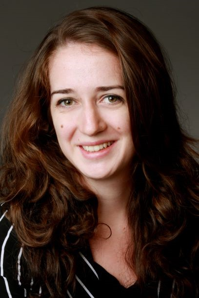
Larissa Saar has been employed by the Max Weber Stiftung since September 2020, initially as an academic assistant and since July 2021 as communications officer for the OPERAS-GER project. After completing her bachelor’s degree in English and American Studies and Political Science at the University of Bonn, she earned a master’s degree in International Peace Studies from Trinity College in Dublin, Ireland.
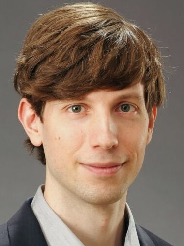
Pattrick Piel has been working at the Max Weber Stiftung since August 2021 as part of the OPERAS-GER project. After completing a bachelor’s degree in history and political science at the Ruprecht-Karls-Universität Heidelberg in 2013, he studied Medieval and Modern History in his master’s degree and attended courses of the East Asian studies department. Since October 2018, he has been part of the international, structured graduate program at the Heidelberg Center for Transcultural Studies to do research on the “Chinese and Latin historiographers and envoys view of nomadism” as part of his doctoral dissertation.
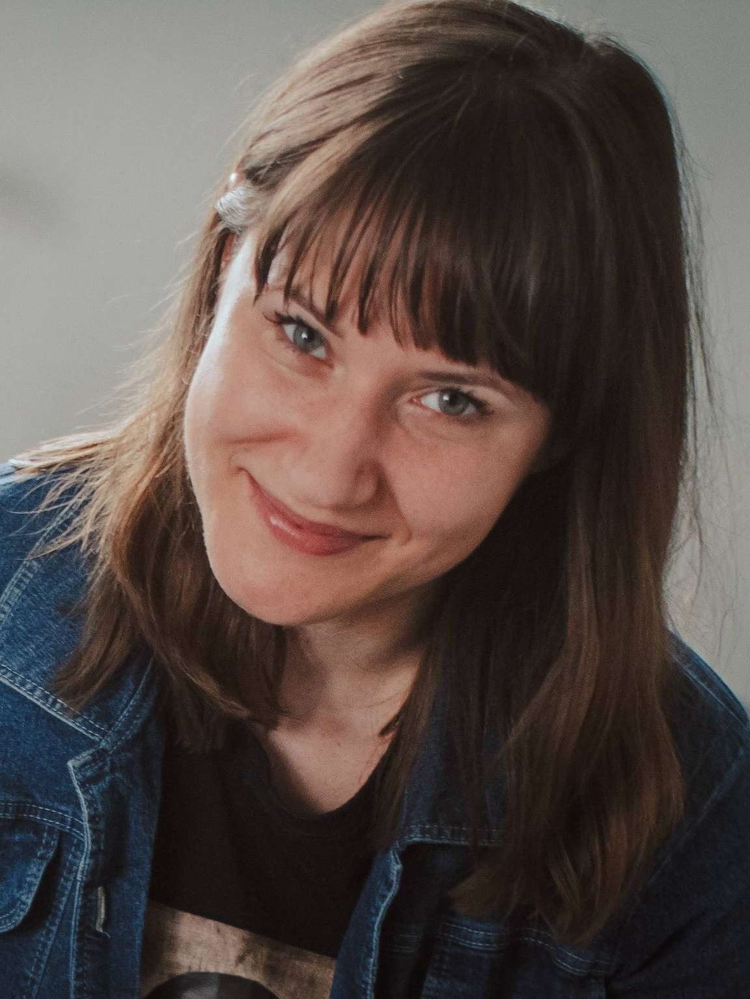
Marta Błaszczyńska is Coordinator of the Digital Humanities Centre and a Senior Open Science Officer at the Institute of Literary Studies of the Polish Academy of Sciences (IBL PAN) in Warsaw, Poland. She is involved in the TRIPLE project as Work Package 2 (Data Acquisition) co-leader. Marta is the co-chair of the DARIAH Research Data Management Working Group.
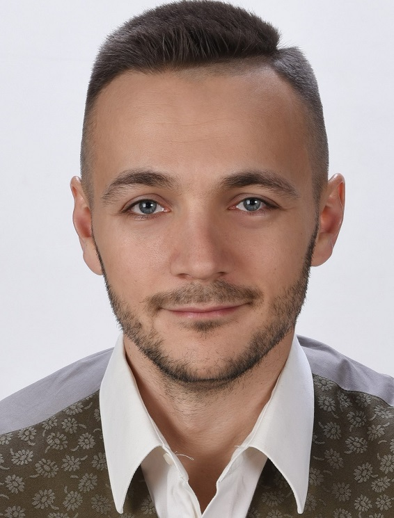
Maciej Maryl is assistant professor and the founding head of the Digital Humanities Centre at the Institute of Literary Studies of the Polish Academy of Sciences (IBL PAN) was awarded scholarships of the Ministry of Science and Higher Education, the Foundation for Polish Science, Fulbright Junior Advanced Research Grant and Fulbright Senior Award. He is involved in DARIAH Digital Methods and Practices Observatory WG, ALLEA E-humanities Working Group, OPERAS Executive Assembly, and OpenMethods Editorial Board. He is currently chair of a COST action New Exploratory Phase in Research on East European Cultures of Dissent.
14:15 — 15:00 CET Session 1 (part 2)
Keynote speech — Openness in social sciences and humanities: Lessons to and from the natural sciences (Sabina Leonnelli, University of Exeter)
Building on a long-standing experience in the study of Open Science practices in the natural sciences (particularly the biological and biomedical sciences), as well as advocacy for the adoption of Open Science practices among philosophers, historians and social scientists, this talk reflects on what the more “mature” Open Science initiatives can teach to domains that are only starting to consider this way of working. Leonelli focuses both on the positive lessons, for instance around the significance of choosing metadata standards, and on the negative lessons, which include adopting problematic classification systems and failing to pay attention to the ethical and social context of data extraction and re-use.
Read about Sabina Leonelli
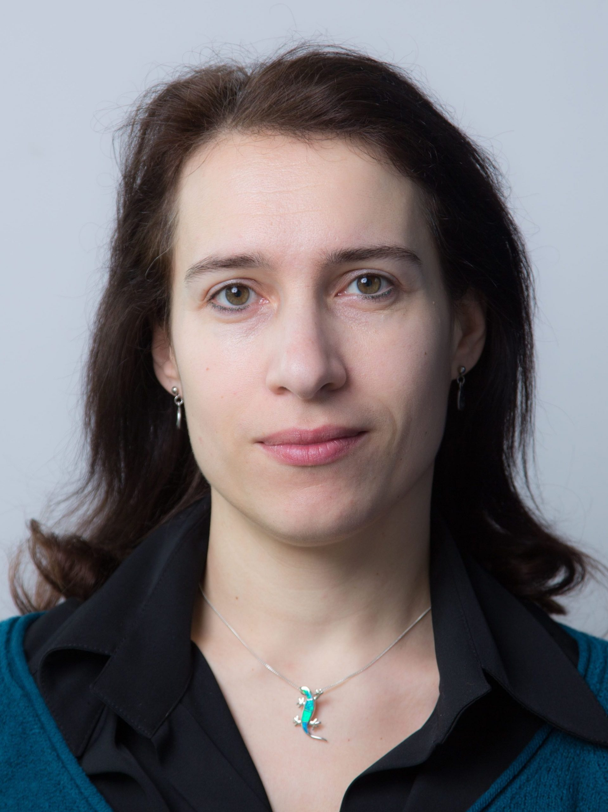
Sabina Leonelli is Professor of Philosophy and History of Science at the University of Exeter, where she co-directs the Centre for the Study of the Life Sciences (Egenis). In 2021-22 she is a Fellow of the Wissenschaftskolleg zu Berlin. She is also a Fellow of Alan Turing Institute, Academia Europaea and Académie Internationale de Philosophie de la Science; and Editor-in-Chief of History and Philosophy of the Life Sciences. Her research concerns the epistemology, history and governance of data-intensive science and plant research; modelling integration across the biological, environmental and health sciences; and open science and related evaluation systems in the global – and highly unequal – research landscape. This latter topic is the focus of her current ERC project “A Philosophy of Open Science for Diverse Research Environment” (PHIL_OS; www.opensciencestudies.eu). Her books include Data-Centric Biology: A Philosophical Study (2016), Data Journeys in the Sciences (2020, with Niccolo Tempini), Model Organisms (2020, with Rachel Ankeny) and Data in Society: A Critical Introduction (2021, with Anne Beaulieu).
15:30 — 17:00 CET Session 2
Talk — GoTriple: The single entry point for the social sciences and humanities into the EOSC (Emilie Blotière, Huma-Num)
This session presents GoTriple, the future discovery service of OPERAS, and how it will be integrated into and thus enrich the services of the European Open Science Cloud (EOSC) for the Social Sciences and Humanities (SSH) communities across Europe and beyond.
GoTriple is being developed by the TRIPLE project (2019-2023). This ambitious project has received funding from the European Union’s Horizon 2020 Research and Innovation action funding scheme INFRAEOSC-02-2019 “Prototyping new innovative services” (grant agreement no. 863420) and involves 21 partners from 13 European countries.
GoTriple will be delivered in March 2023 to help researchers explore, find, access and (re)use open scholarly SSH resources in nine different languages (Croatian, English, French, German, Greek, Italian, Polish, Portugese, Spanish). The platform will collect research data and publications, researchers’ profiles and projects. Five additional innovative digital services and systems will be integrated into the platform to support research (e.g. visualisation, annotation, trust building and recommender system) and to discover new ways of funding research (e.g. crowdfunding). A short demo will present these features.
The project is resolutely user needs oriented – a community of researchers but also of non-researchers has accompanied the consortium since the beginning of the project to ensure that the platform meets their current needs. The objective is also to encourage interdisciplinarity and exchange between researchers from different disciplines and generations.
GoTriple will support scientific, industrial and societal applications of SSH by maximising the reuse of resources through Open Science and FAIR principles and a multidisciplinary transfer of knowledge. The platform will also increase the economic and societal impact of SSH resources for the scientific community at large, as well as for citizens, policy makers, media and enterprises.
Read about Emilie Blotière
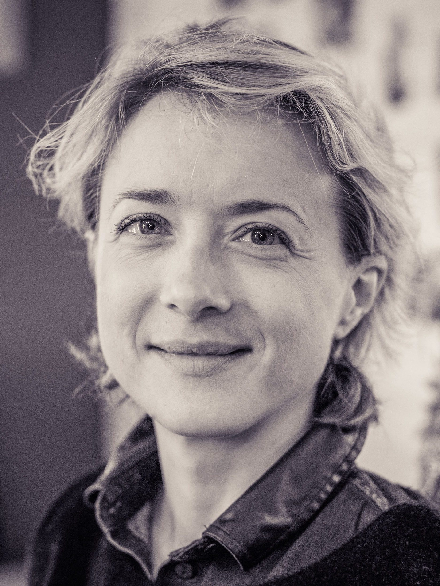
Emilie Blotière is Project Manager of the TRIPLE project and works in CNRS (Huma-Num infrastructure). She is also member of the OPERAS Coordination Team, the European Research Infrastructure devoted to open scholarly communication. She is projects’ coordinator for the research infrastructure. She graduated with a Master in digital humanities applied to historical disciplines and a degree in history. Before her professional reorientation in digital humanities, she worked in bank and insurance companies as an institutional partnerships manager in the field of Wealth Management.
DAY 2: 23 November
13:00 — 14:30 CET Session 1
Talk — How to create a social sciences and humanities (SSH) vocabulary: The GoTriple Hackathon example (Iraklis Katsaloulis, EKT and Cezary Rosiński, IBL-PAN)
This session focuses on the GoTriple vocabulary as well as on the results of the first GoTriple Hackathon in November 2021.
The goal of the Hackathon is to assess and improve coverage of the Library of Congress Subject Headings (LCSH) in the GoTriple vocabulary by using existing subject headings systems (i.e. systems which use specific words or phrases in order to categorise and organise books and articles) that are already in use for the organisation of publications in social sciences and humanities (SSH) disciplines in the languages that are represented in the TRIPLE project (Croatian, English, French, German, Greek, Italian, Polish, Portuguese, Spanish).
In fact, the impact of the GoTriple Hackathon is much greater: The workflow created during the event helps to incorporate national, multilingual resources into the international exchange of knowledge about the procedure that should be followed in the future for the data mapping between LCSH or other international databases and national non-English data sources.
Read about the speakers
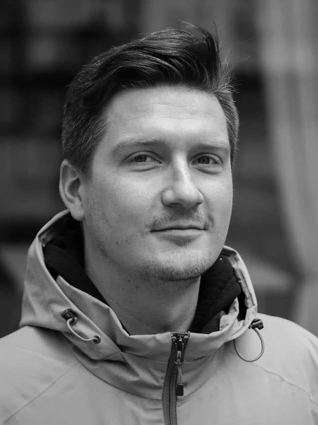
Cezary Rosiński, PhD in humanities, is assistant professor and data expert at the Institute of Literary Studies of the Polish Academy of Sciences (IBL PAN). Author of Ocalić starość. Literackie obrazy starości w polskiej literaturze najnowszej [To preserve the old age. The literary views of the old age in Polish contemporary literature] (Lublin 2015). Member of the TRIPLE project team, Global trajectories of Czech Literature since 1945 and Digital Research Infrastructure for the Arts and Humanities DARIAH-PL projects. He received a scholarship from the Czech Academy of Sciences. His research interests include the latest Polish prose, the issues of space in literature, and bibliographical data science.
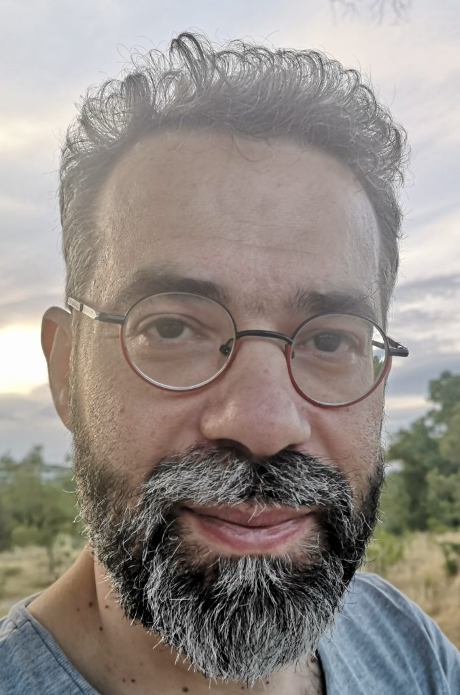
Irakis Katsaloulis holds a PhD in History of Science. He is an Open Science Officer at the National Documentation Centre of Greece, and a member of the TRIPLE Project Team.
15:00 — 16:30 CET Session 2 (moderated by: Paula Forbes and Stefano De Paoli, University of Abertay)
Panel — Is crowdfunding a solution to the lack of research funding for social sciences and humanities? (Luigi di Pace, Univ. Milano-Biccoca, Mariannig Le Bechec, Univ. Lyon 1, Alizé Aversano, wemakeit, Michael Arentoft, EC’s Open Science Unit)
In this session, we will discuss whether crowdfunding can be seen as a potential solution to the lack of funding for the social sciences and humanities (SSH). Crowdfunding is the practice of funding projects/ideas via the internet, normally done by a large group of people. GoTriple will have its own crowdfunding service, which will support SSH research projects. There is, however, a need to reflect critically on the extent to which a crowdfunding solution can help foster good quality research and also to understand how to set up such a crowdfunding solution which is successful and highly usable. The session will comprise three parts:
- a presentation of selected results of the research on crowdfunding conducted for the TRIPLE project
- a panel discussion with invited speakers
- a demo presentation of the GoTriple crowdfunding solution.
After each part, there will be time for a group discussion.
Moderators: Paula Forbes, Stefano De Paoli, University of Abertay.
Panelists:
- Mariannig Le Bechec, Univ. Lyon 1,
- Luigi di Pace, Univ. Milano-Biccoca
- Alizé Aversano, wemakeit
- Michael Arentoft, EC’s Open Science Unit
Read about the panelists and moderators
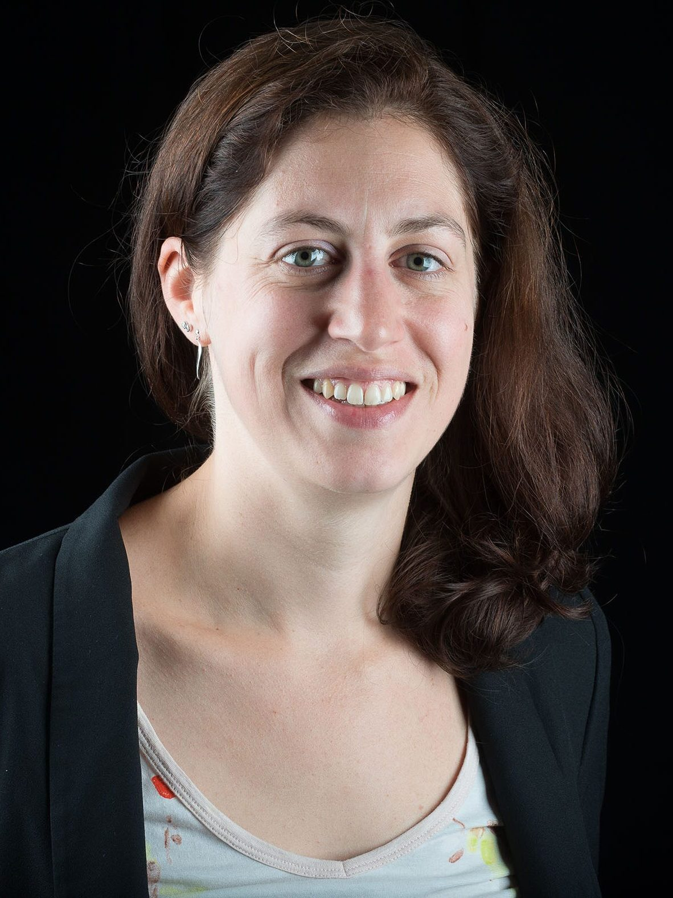
Mariannig Le Béchec is an associate Professor (HDR) at the University Claude Bernard Lyon 1 (UR ELICO) and co-manager of the URFIST of Lyon. Leveraging research methods linked to the digital sociology, web mapping, and business intelligence, she focuses on political and scientific communication through social media. She is also interested in the reception and ordinary uses of open knowledge, and in open science practices by epistemic communities. In 2018, she published the results of a study on the networks and dynamics of the crowdfunding of cultural projects.
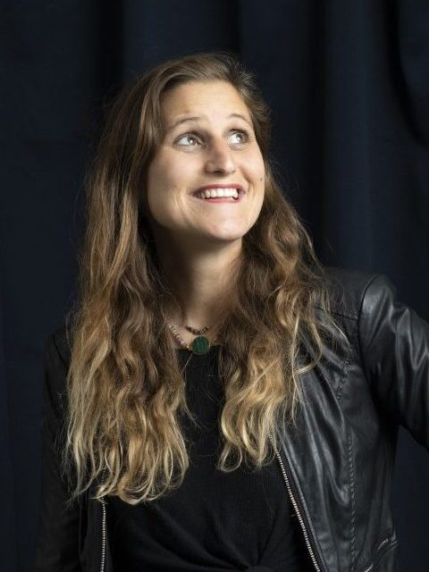
After a career start in impact investing, Alizé Aversano specialised in access to finance through crowdfunding. She has been supporting entrepreneurs make their ideas come true as mentor, workshop facilitator or coach since 2017 and joined wemakeit in 2020, the largest crowdfunding platform in Switzerland.
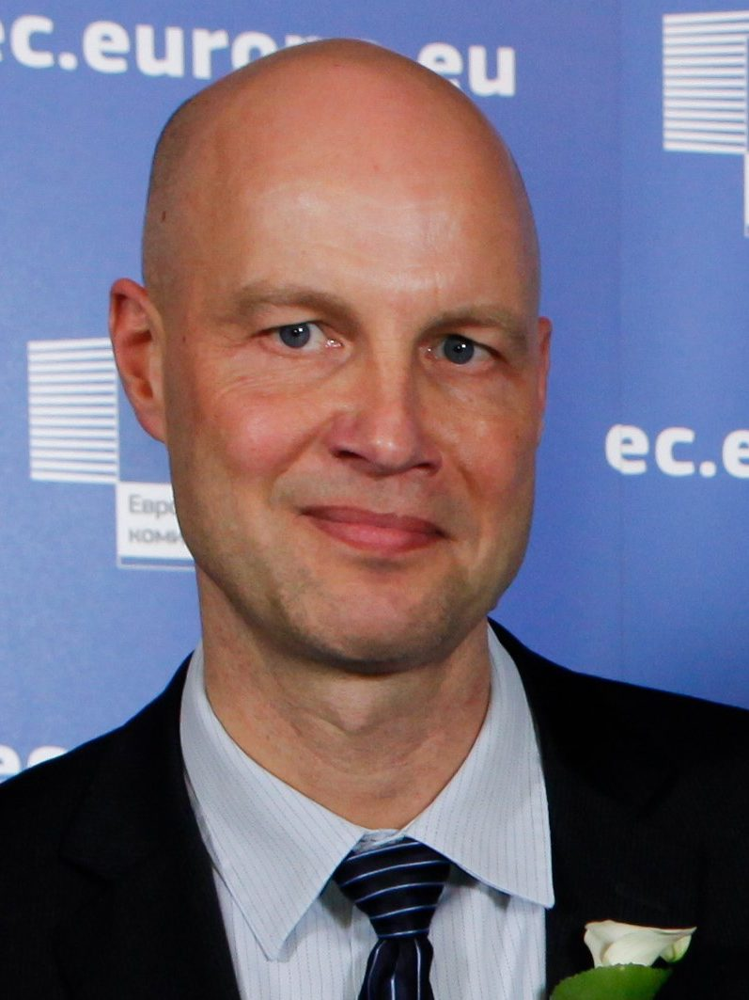
Michael Arentoft is Deputy Head of the European Commission’s Open Science Unit covering policies for opening up the research system internally, between scientists and between disciplines, and externally, towards society as a whole. He was previously Deputy Head of International R&I Cooperation Strategy and Innovation Union policy officer. Before that he was Acting Head of Strategy for ICT R&I, and responsible for the coordination of ICT Essential Technologies and Infrastructures. Michael has an industrial background with Computer Resources International and with Rovsing International. His educational background is from the Computer and Information Science PhD program of the University of Pennsylvania and from the Electrical Engineering Master’s program of the Technical University of Denmark.
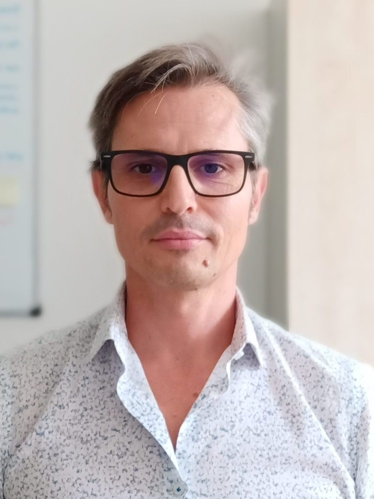
Luigi Di Pace has been in charge since 2017 of Bicocca University of Crowdfunding, the alternative finance program of the University of Milano-Bicocca which he helped to design and launch. In the previous 10 years he was head of the press office of the same university. Graduated in economic history, he had experience in the tourism industry and has been a member of the association of journalists since 1993.
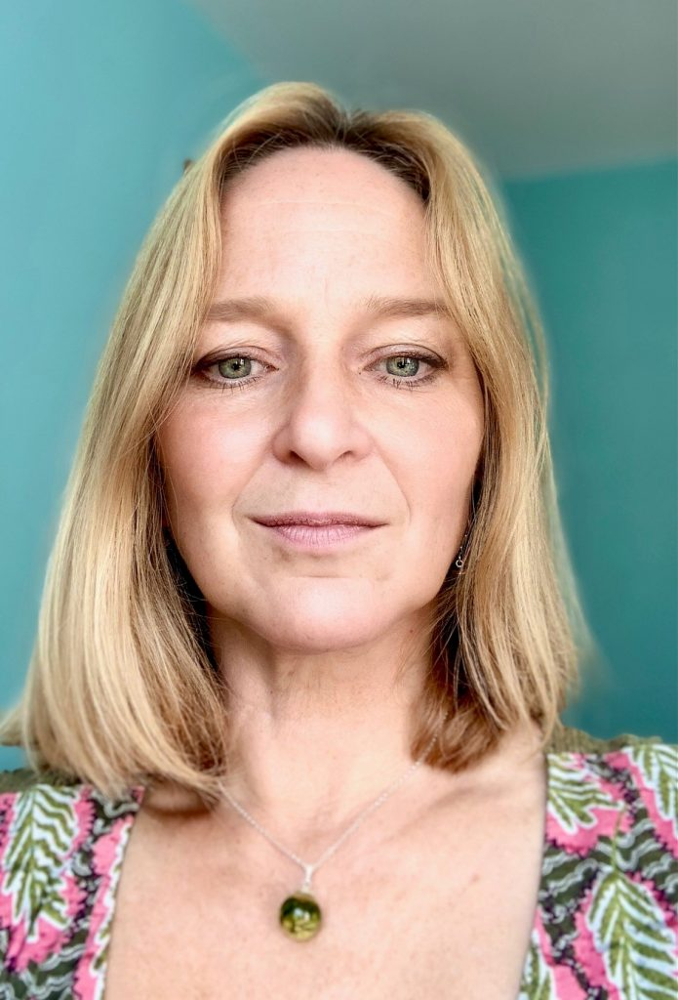
Paula Forbes (Abertay University) works on the TRIPLE Project carrying out the User Research to inform the development of the GoTriple platform. Paula has over 10 years’ experience working on various European projects, mostly developing digital platforms. Her background is in HCI and Sustainability, and she is interested in how technology can help to improve Society.
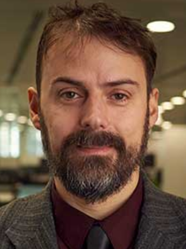
Stefano De Paoli is Professor of Digital Society at Abertay University in Scotland. He leads the Work Package on User research and codesign of the TRIPLE project. His interests encompass broadly several aspects of the user research for digital platforms including: online collaboration, trust and reputation and online digital labor.
DAY 3: 24 November
13:00 — 14:30 CET Session 1 (moderated by: Gert Breitfuss and Leonie Disch, Know-Center )
Talk & panel — Business & Open Science – contrast or complement? (Sarah Stryeck, Graz University of Technology/Know-Center, Petr Knoth, Knowledge Media Institute (KMi)/CORE and Niels Stern, OAPEN, Vanessa Proudman, Director SPARC Europe)
There is no single ideal business model (BM) for Open Science (OS) ecosystems that can be adopted as a standard. In this session, we will provide an overview of existing BM for OS Ecosystems based on the research conducted within the TRIPLE project. Founders/Directors of existing OS platforms provide practical insights regarding a sustainable BM. In the following panel discussion, we will debate about pros and cons of different models and derive implications towards developing a sustainable BM for OS ecosystems such as the GoTriple platform.
The session is divided into three main parts:
- Overview of BMs for OS Ecosystems out of TRIPLE Competitor Analysis,
- Presentation of the BM of existing OS Platforms,
- Panel discussion on BM success factors,
Moderators: Gert Breitfuss and Leonie Disch, Know-Center.
Panelists:
- Sarah Stryeck, Graz University of Technology/Know-Center,
- Petr Knoth, Knowledge Media Institute (KMi)/CORE,
- Niels Stern, OAPEN,
- Vanessa Proudman, Director SPACE Europe.
Read about the panelists and moderators

Sarah Stryeck has a PhD in biochemistry and is currently employed as data steward at Graz University of Technology within the frame of the strategic project Digitale TU Graz and as Senior Researcher at Know-Center. In her current position, she focuses on open science, data platforms and data governance. Sarah coordinates the project Innovative Data Environments @ Styria, and leads the task competence mapping for HPC, big data and AI in the H2020 project EuroCC. Additionally, Sarah leads TU Graz activities within the project Austrian DataLab and Services and activities around the data management and analytics platform CyVerse Austria (BMBWF). At Know-Center, Sarah is involved in all activities around data platforms as well as 360° Certification for AI.
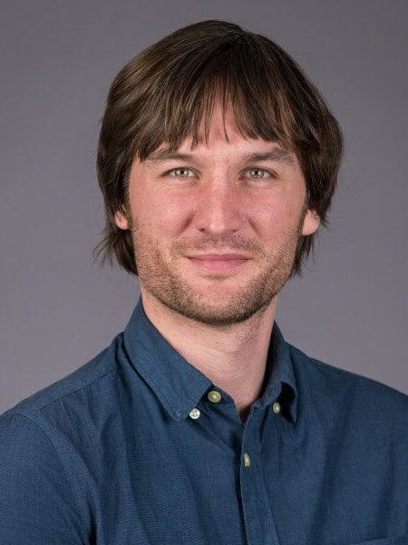
Dr. Petr Knoth leads the Knowledge Media Institute (KMi)’s Big Scientific Data and Text Analytics group (BSDTAG). He is the founder and Head of CORE (core.ac.uk), a service with over 40 million Monthly Active Users (MAU) providing access to the world’s largest collection of full text open access research papers aggregated from data providers around the world. Petr has a deep interest in the use of AI to improve research workflows and is a relentless advocate for open science. He has led the team developing the fosteropenscience.eu e-learning platform which has become widely used for training European researchers. Petr has also been involved as a researcher and as a PI in over 20 European Commission, national and international funded research projects in the areas of data science, text-mining, open science and technology enhanced learning and has over 100 publications based on this work.
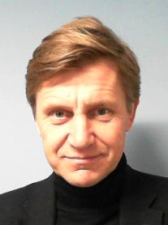
Niels Stern is director of OAPEN. He began his career in scholarly book publishing in 2003. Co-founder of the OAPEN project in 2008. Head of Publishing at the Nordic Council of Ministers in 2011. Since 2014 independent expert for the European Commission on open science and e-infrastructures. In 2017 Head of Department for Licence Management at the Royal Danish Library and chief negotiator for the national licence consortium in Denmark. Niels was trained in literature and communications at the University of Copenhagen and at Goldsmiths College, University of London. ORCID: https://orcid.org/0000-0001-6466-9748
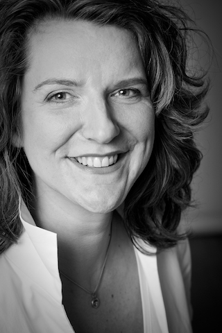
Vanessa Proudman is Director of SPARC Europe, where she is working to make Open the default in Europe. Vanessa has 20 years of international experience working on Open Access, Open Science, Open Culture and Open Education with many leading universities worldwide from over 20 countries. Research and knowledge exchange are her vehicles to inform, connect and advocate for change in these areas: to increase international, national and regional OS policy-making and practice in Europe. Vanessa is also the Chair of the SCOSS Executive Group. Here, she is exploring how to concretely create – and above all sustain – a more equitable, inclusive and bibliodiverse open science ecosystem.
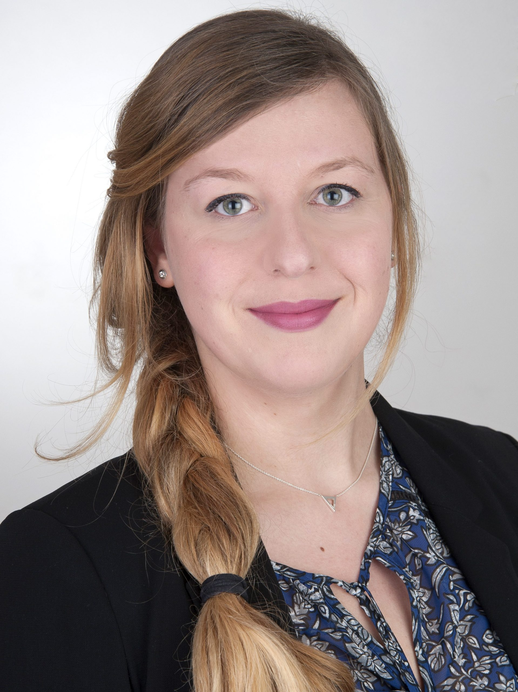
M.Sc. Leonie Disch is a researcher and PhD student at the Know-Center, research centre for Big Data, artificial intelligence and data-driven business. Previously, she completed her Master’s degree in Psychology. Her research focuses on knowledge construction, transfer and HCI (Human Computer Interaction). In her doctoral thesis, she is researching knowledge construction and open science. She is assisting Gert Breitfuss in leading the WP7 “Innovation, exploitation and sustainability” of the TRIPLE project.
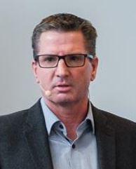
Gert Breitfuss is a senior researcher at Know-Center embedded in the research group Data-Driven Business with his main research focus on data-driven Business Models. Previously he led the research area Open Innovation at Evolaris, a research center for digital assistance systems. At this time Gert was involved in various national and EU funded projects. From 2009 to 2012 he taught and researched as a full-time lecturer at the degree program Innovation Management at University of Applied Science CAMPUS 02 in Graz. Gert has a technical background and received a master degree in business administration from Karl-Franzens University Graz.
15:00 — 16:30 CET Session 2 (moderated by: Francesca Di Donato)
Panel — GoTriple in the EOSC ecosystem (Daan Broeder, CLARIN, Elena Giglia, OPERAS, Laure Barbot, DARIAH, Carsten Thiel, CESSDA, Klaas Wierenga, GÉANT )
The GoTriple discovery platform is designed to be integrated into and thus to enrich the services of the European Open Science Cloud (EOSC) for the Social Sciences and Humanities (SSH) communities across Europe and beyond – so as to enable the European SSH communities at large discovering and reusing SSH resources across disciplinary and language boundaries.
More precisely, GoTriple :
- brings together digital scholarly objects of all kinds from a wide range of databases, data repositories, publishing and aggregation services to promote findability and reduce fragmentation within SSH;
- enables interoperability, connecting the SSH data landscape with the European scholarly data commons as well as the larger Open Science frameworks and infrastructures;
- will serve hand in hand with the SSH Open Marketplace, a resource to search for and find a wealth of research tools (developed by the SSHOC project), as the EOSC SSH component.
This session is dedicated to explore GoTriple connections, links and interdependencies with the major components of the EOSC ecosystem. The panelists will be engaged in a debate, focused on the actual and envisaged relations mainly between the TRIPLE and the SSHOC project components.
Moderators: Francesca Di Donato (CNR/TRIPLE)
Session organized by: Francesca Di Donato (CNR/TRIPLE) and Monica Monachini (CNR/TRIPLE)
Panelists :
- Daan Broeder (CLARIN),
- Elena Giglia (OPERAS),
- Laure Barbot (DARIAH),
- Carsten Thiel (CESSDA),
- Klaas Wierenga (GÉANT).
Read about the panelists and moderator
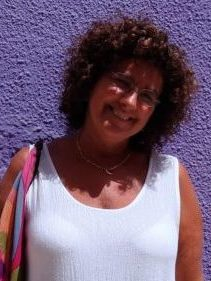
Elena Giglia, PhD, Masters’ Degree in Librarianship and Masters’ Degree in Public Institutions Management, is Head of the Open Access Office at the University of Turin. In June 2019 she was appointed as a member of the “Open Science” Working Group at the Ministry for Higher Education and Research (MIUR). She is also a member of the “Open Access working group” at CRUI – Conference of Italian Universities Rectors, of AISA, Italian Association for Open Science, and of IOSSG, Italian Open Science Support Group. She attends national and international conferences, and writes and lectures on Open Access and Open Science. She takes part as expert in several EU Workshops on Open Access and Open Science, and has been part of the European Open Science networking for many years. She coordinates the CO-OPERAS Implementation Network in GoFAIR and represents Italy in the OPERAS consortium. She serves in the Scientific Committee of Open Edition and in the Scientific Committee of the international OAI-CERN workshop on Innovation in Scholarly Communication.
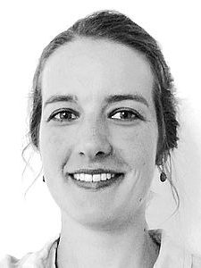
Laure Barbot is European project officer at DARIAH and coordinates the work on the SSH Open Marketplace developed in the SSHOC project. Prior joining DARIAH, she was general secretary of a French research infrastructure for Social Sciences and Humanities – the Social Sciences and Humanities Centres Network – and worked as European Project Manager for the University of Toulouse and for the CNRS. Laure has a background in French and German philosophies and Political Science.
Daan Broeder has a background in electrical engineering and signal analysis, and has a long career working on research infrastructure, working in different capacities at different CLARIN centres and was managing tasks in European and national projects such as for the archiving and metadata related work at MPI for Psycholinguistics TLA unit, for which he was the CTO, and broader in the CLARIN, DASISH, EUDAT and PARTHENOS projects. He was responsible convenor for ISO standards on metadata and persistent identifiers. Currently he is one of the technical coordinators in the Dutch CLARIAH project and leads a work package in the SSHOC project for CLARIN ERIC.
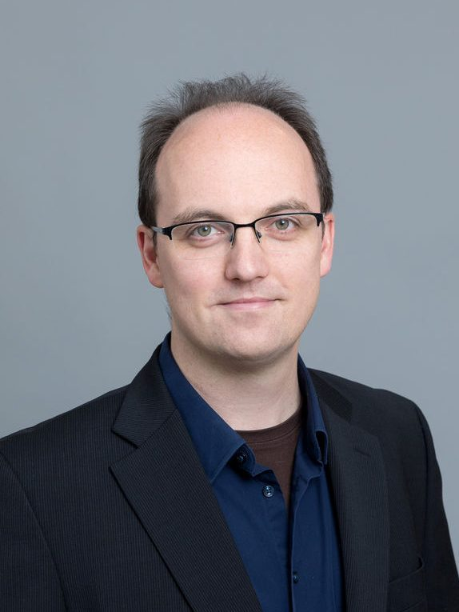
Carsten Thiel is Chief Technical Officer (CTO) at CESSDA ERIC, the Consortium of Social Science Data Archives, at its main office in Bergen, Norway. He is charge of CESSDA’s technical roadmap and strategy and the infrastructure’s interoperability within the EOSC and the SSHOC cluster project, which is coordinated by CESSDA. Carsten has previously worked at the University of Göttingen as Technology Coordinator and Co-Manager for the DARIAH-DE research project and worked with DARIAH ERIC on its EC funded projects. He holds a PhD in Mathematics from University of Magdeburg. His research interests include digital research infrastructures, distributed development processes and the DevOps approach to infrastructure management.
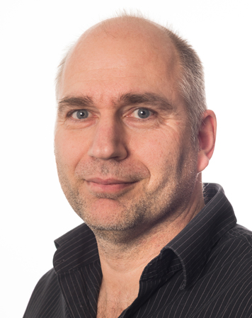
Klaas Wierenga is GÉANT’s Chief Information & Technology Officer, responsible for GÉANT’s Trust & Identity, Security, Cloud, Product Management, Software Development and IT teams.
Klaas has an extensive background in innovation management, with an emphasis on identity, mobility and security. Before joining GÉANT, Klaas was a senior consulting engineer and identity architect at respectively Cisco Systems’ Research and Advanced Development group and Cloud Infrastructure Services group. Before that, Klaas was an innovation manager and manager of Middleware services at SURFnet, the Netherlands NREN. There, Klaas built the first generation of federated identity systems at SURFnet and was the creator of the eduroam service for WiFi roaming in research and education.
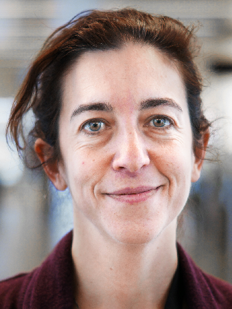
Francesca Di Donato is a researcher at ILC-CNR. She has a PhD in History of Political Philosophy. Her research has been focused on Science Communication for more than 15 years. She is leading TRIPLE WP6 – “Open Science and EOSC Integration”, and is a member of the CO-OPERAS Go-FAIR Implementation Network and of the ICDI Competence Center on EOSC. Francesca is co-chair of the EOSC Association Task Force on Research Career, Recognition and Credit.
Hashtag and Twitter handle collection
#TRIPLEConference
@TripleEU
>> Other relevant hashtags and handles:
#TRIPLE #GoTriple #Discover #Connect #Collaborate
#SSH #HSS #SocialSciences #Humanities #SSHResearch #DH #DigitalHumanities
#OpenScience #OS #OpenScholarship #OpenResearch #OpenAccess #OA #OpenData #OpenCollaboration
#multilingualism
@OPERASEU | @HorizonEU | @EUScienceInnov | @EU_Commission | @EoscPortal | @EoscSecretariat | @EOSC_eu | @EOSCFuture | @eoscassociation
Stay informed
Would you like to find out more about the TRIPLE project? Then check our website, follow us on Twitter @TripleEU and subscribe to the OPERAS newsletter.
If you would like to be more actively involved in the TRIPLE User Community, then have a look at our upcoming Co-Design Workshops here and subscribe to the TRIPLE Community Mailing List.
If you have any specific questions about the 1st TRIPLE International Conference, please contact us at tripleconference@ibl.waw.pl.